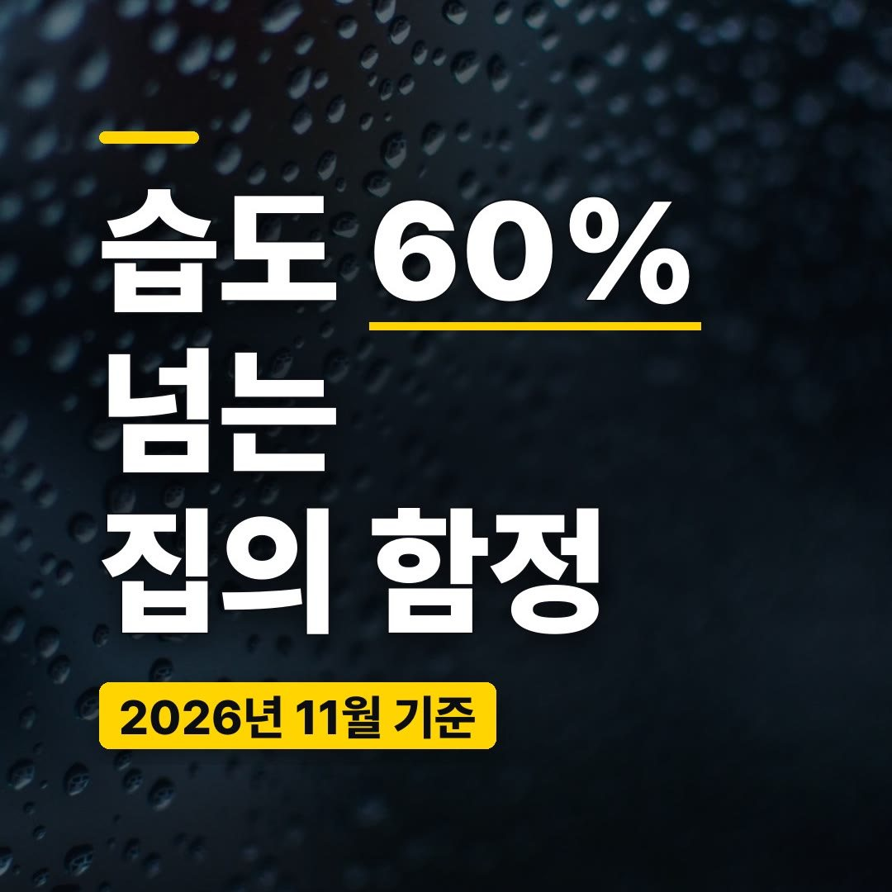
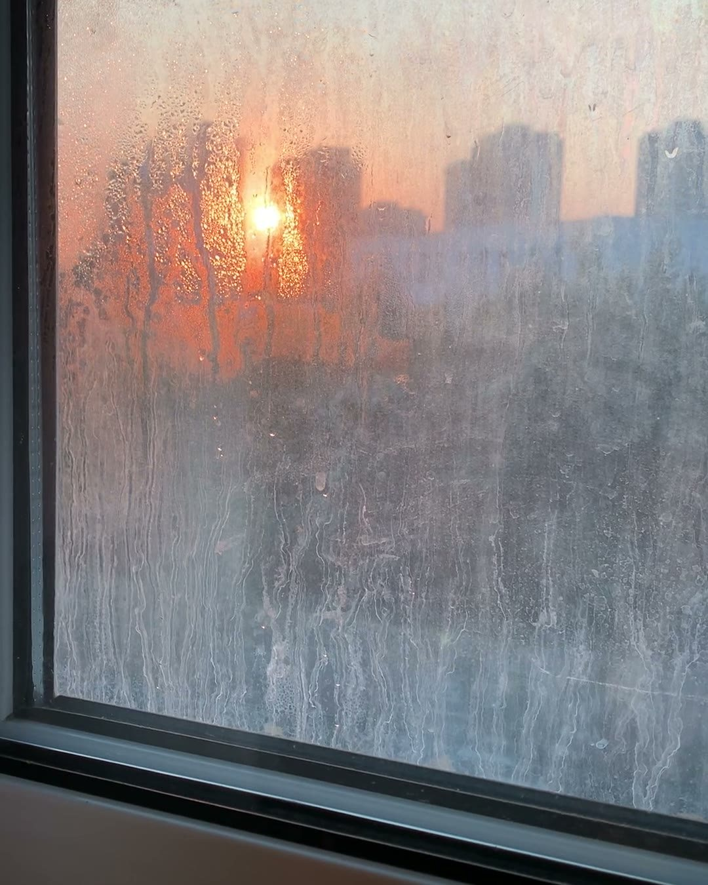
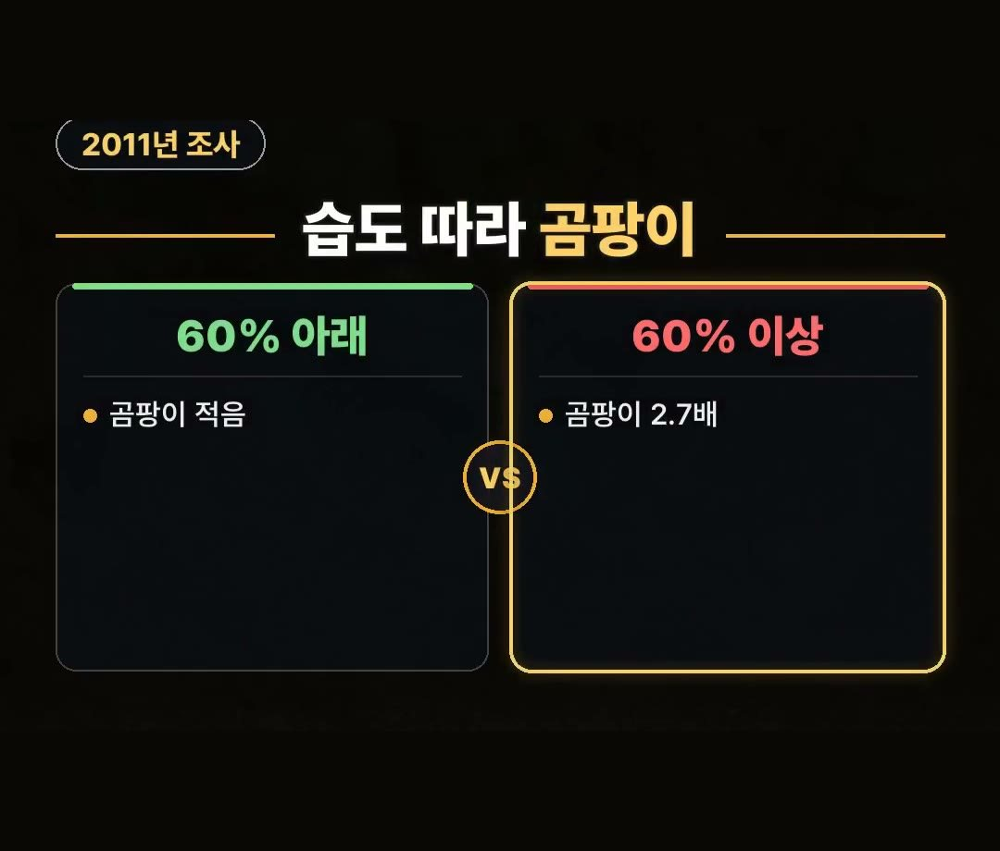
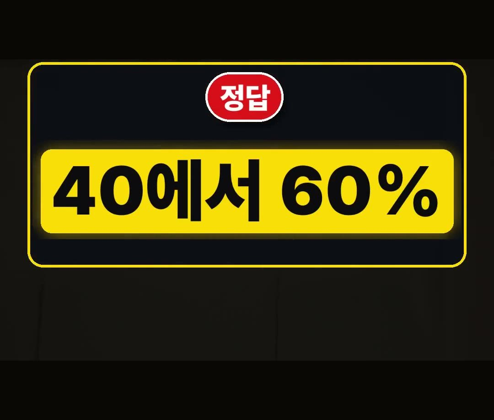

온습도계 추천, 습도 60% 넘는 집 곰팡이 2.7배 차이와 안 사도 되는 집
※ 이 글에는 제휴 링크가 포함되어 있으며, 링크를 통해 구매하시면 일정 수수료를 받을 수 있습니다. (가격은 같습니다)
※ 이 포스팅은 쿠팡 파트너스 활동의 일환으로, 이에 따른 일정액의 수수료를 제공받습니다.
※ 이 콘텐츠는 토스쇼핑 쉐어링크 활동의 일환으로, 링크를 통한 구매가 발생하면 일정 수수료를 지급받습니다.
습도 60% 미만인 집과 60% 이상인 집을 견주면, 국립환경과학원 2011년 조사에서 60% 이상인 집의 곰팡이가 2.7배 높았어요.
같은 겨울 집이라도 습도 숫자 하나에 따라 결과가 이렇게 갈렸다는 뜻이에요.
이 글에서는 겨울 적정 습도와 온도, 보일러 설정 온도를 1도 낮췄을 때 난방 에너지 최대 7%라는 숫자의 뜻, 그리고 온습도계를 안 사도 되는 집까지 차례로 정리했어요.
겨울 실내 습도는 40에서 60%, 온도는 18에서 20도!
이 두 숫자만 기억하세요 😊
그리고 습도 60% 이상 집의 곰팡이 2.7배는 2011년 국립환경과학원 조사 숫자라는 것도 같이 정리해 봤어요.

온습도계 추천 전에, 습도는 눈에 안 보여요
겨울이 되면 창문에 물방울이 맺히는 집이 많아요.
그런데 물방울이 보여도 지금 습도가 몇 %인지는 눈으로 알 수 없어요.
온도는 손으로 대충 느낄 수 있지만, 습도는 숫자로 봐야 알 수 있는 값이에요.
그래서 온습도계 추천 글을 찾는 분이 많아지는 때도 바로 이 겨울이에요.

습도 60% 이상인 집, 곰팡이 2.7배
국립환경과학원이 2011년에 발표한 주택 조사 결과를 보면, 실내 습도가 60% 이상인 집은 60% 미만인 집보다 곰팡이가 2.7배 높았어요.
- 조사: 국립환경과학원 주택 조사 (2011년 발표)
- 습도 60% 미만 집: 비교 기준
- 습도 60% 이상 집: 곰팡이 2.7배
오래전 조사라 오늘의 수치로 그대로 볼 수는 없지만, 60%라는 선을 왜 눈여겨봐야 하는지는 알 수 있어요.

겨울 적정 습도와 온도는 얼마일까요
정부 정책브리핑의 겨울철 난방비 절약 안내를 보면 겨울 실내 적정 숫자는 이렇게 나와 있어요.
- 겨울 실내 적정 습도: 40에서 60%
- 겨울 실내 적정 온도: 18에서 20도
습도는 60%를 넘지 않게, 온도는 18에서 20도 사이로 맞추는 것이 이 안내의 내용이에요.
이 숫자를 맞추려면 지금 우리 집 습도와 온도가 몇인지부터 알아야 하겠죠.
거실과 침실, 아이 방처럼 방마다 습도가 다를 수 있으니, 숫자를 볼 수 있는 자리가 어디인지도 함께 떠올려 보세요.
특히 습도가 60%를 넘게 보이면 위에서 본 2011년 곰팡이 조사가 떠오르는 숫자예요.

보일러 온도 1도의 의미
같은 정책브리핑 안내에 따르면 보일러 설정 온도를 1도 낮추면 난방 에너지를 최대 7% 절약할 수 있다고 해요.
- 조건: 보일러 설정 온도를 1도 낮췄을 때
- 효과: 난방 에너지 최대 7% 절약
여기서 7%는 온습도계가 아껴 주는 숫자가 아니라, 설정 온도를 1도 낮췄을 때의 난방 에너지라는 점을 같이 기억해 주세요.
방 온도를 숫자로 보고 있으면 보일러를 몇 도로 둘지 정하기가 한결 쉬워져요.
온습도계 추천 비교, 이런 집이면 안 사도 돼요
온습도계 추천 비교 글을 보기 전에 우리 집에 이미 습도를 보여 주는 화면이 있는지부터 살펴보세요.
- 가습기 화면에 습도가 뜨는 집
- 제습기 화면에 습도가 뜨는 집
- 에어컨 화면에 습도가 뜨는 집
이런 집이라면 따로 온습도계를 사지 않아도 지금 습도를 알 수 있어요.
반대로 습도를 볼 화면이 하나도 없다면 작은 온습도계 하나로 방마다 숫자를 볼 수 있어요.
상품 이름을 보면 탁상에 두거나 벽에 걸 수 있는 디지털 온습도계도 있어요.
정리
- 국립환경과학원 2011년 조사에서 습도 60% 이상 집은 미만 집보다 곰팡이가 2.7배 높았어요.
- 정부 안내 겨울 실내 적정 습도는 40에서 60%, 온도는 18에서 20도예요.
- 보일러 설정 온도를 1도 낮추면 난방 에너지를 최대 7% 절약할 수 있어요.
가습기·제습기·에어컨에 습도가 이미 뜨는 집이라면 온습도계는 안 사도 돼요.
링크는 아래에 모아 두었어요.
📌 2026년 11월 기준 정보예요. 가격은 시기에 따라 달라질 수 있어요.
· 기후에너지환경부 · 국립환경과학원 주택 실내 미생물 조사
사진·영상사진·영상: Pexels (Dimitri C, Matu Randall, Max Vakhtbovych, Ming Z, RDNE Stock project, Raphael Justino)